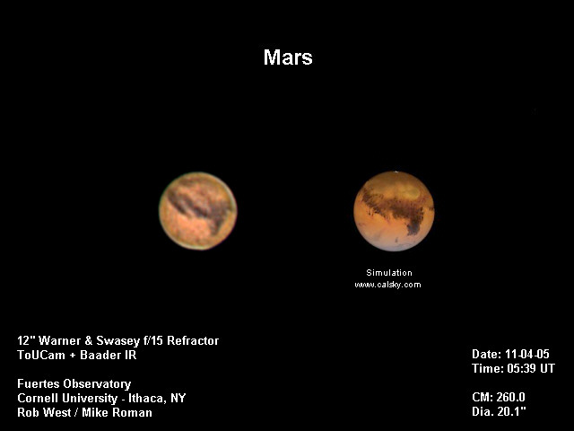

Mars Through a Webcam
This image was created by Rob West using a webcam attached to the Fuertes refractor. He combined approximately 240 frames picked from the 2-minute, 1200-frame video, then processed the result to enhance the contrast of the surface features. As a result, the image is much better than what visitors can expect to see in the eyepiece.
North is down (the Fuertes telescope inverts images); Mars's southern (top) hemisphere is slightly tilted toward us. The most obvious feature is Syrtis Major, the dark plain that stretches northward along the right side of the image. Syrtis Major is the most prominent feature on the planet, and often the only one visible to the eye at Fuertes. Hellas Planitia, a gigantic impact basin, is the lighter region above it.
You might notice that the center of the disk is much lighter in the image than in the simulation; this is probably what's left of the large dust storm that erupted in October.
